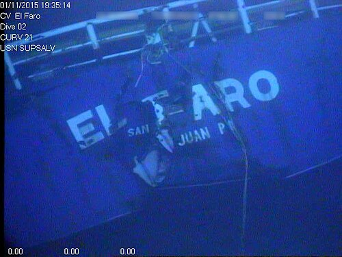

DOSSIER M13 // ATLANTIC // 2015
El Faro: the sinking in Hurricane Joaquin
[ MARITIME & GEOGRAPHIC MYSTERIES // MODERN ]


Event and chronology
The cargo ship El Faro left Jacksonville for Puerto Rico in September 2015 with 33 people aboard. It continued toward Hurricane Joaquin, lost contact, and sank near the Bahamas. The Coast Guard recovered the voyage data recorder; a search later located the wreck in deep water.
What later accounts allege
Later claims have described the loss as a deliberate sacrifice, a mysterious storm event or a route hidden by authorities. The case is also sometimes recast as inexplicable because the ship was lost despite modern forecasting.
Records, searches and conditions
The NTSB marine accident report analyzed the voyage data recorder, bridge audio, weather forecasts, route decisions, flooding and the ship’s final movements. NOAA and National Hurricane Center advisories document Joaquin’s uncertain track and intensification. The investigation found a chain of operational and safety failures rather than an anomalous event.
Independent and contrary evidence
The recorder preserves the bridge’s final hours, and the identified wreck provides direct evidence of the sinking. Forecast uncertainty existed, but the hazardous route, vessel condition and decision-making can be evaluated from records; no evidence supports an intentional loss or cover-up.
What remains unknown
Some mechanical details and the final physical sequence remain uncertain because the wreck was not recovered. The extent to which different decisions would have prevented loss is a counterfactual, though the report identifies specific missed opportunities and unsafe conditions.
Assessment
El Faro was a preventable maritime disaster with an unusually rich evidentiary record, not an unexplained disappearance. A new recorder, wreck evidence or verified weather data contradicting the investigation could revise details; current public records strongly support the NTSB’s causal account.
Sources and limits
- NTSB — Sinking of SS El Faro, report MAR-17/01Primary accident report analyzes recorder, route, weather and flooding; findings reflect available recorder and wreck evidence.
- NTSB — El Faro investigation docketCase docket links evidence and safety recommendations; it represents the investigation record, not every counterfactual.
- National Hurricane Center — Hurricane Joaquin 2015 reportOfficial storm track/advisories supply route context; regional forecasts do not measure conditions at every vessel position.